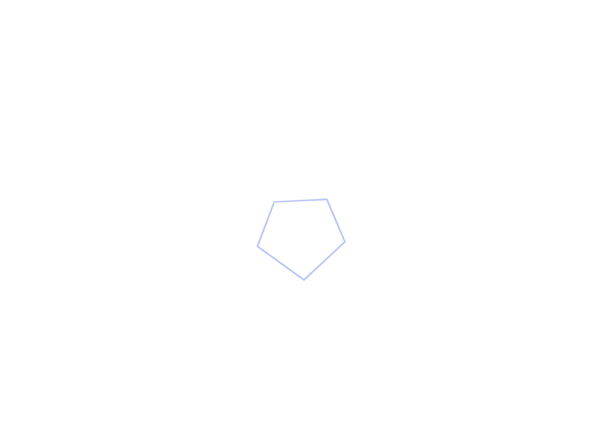
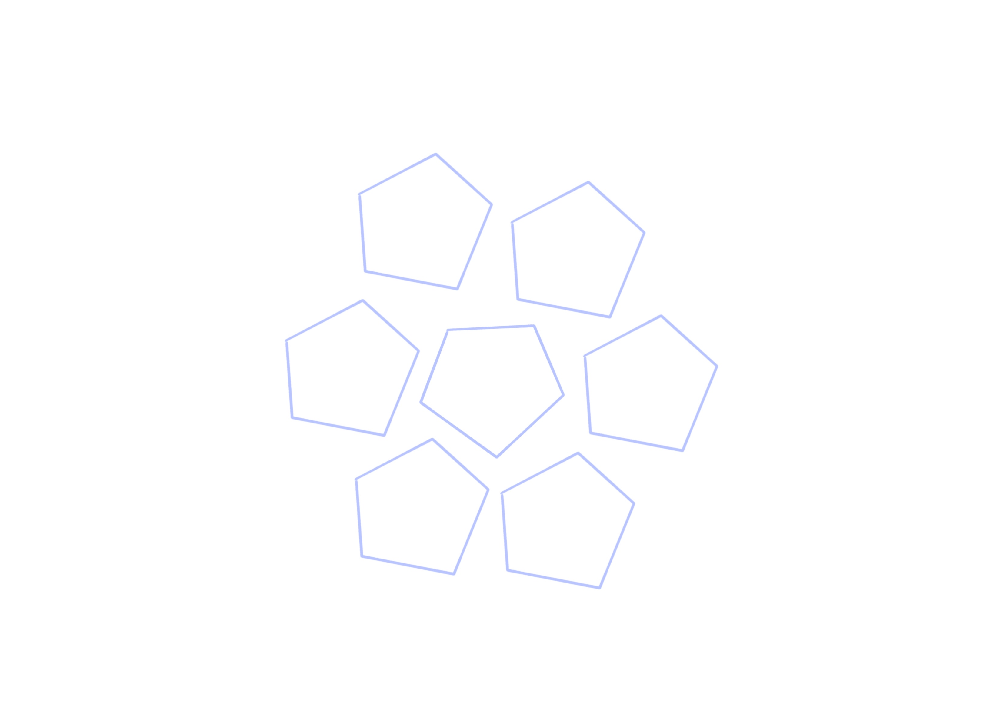
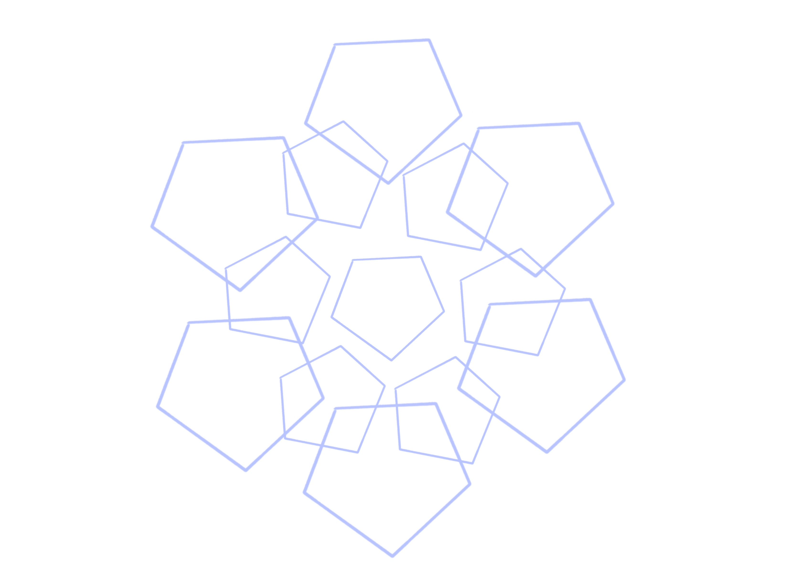
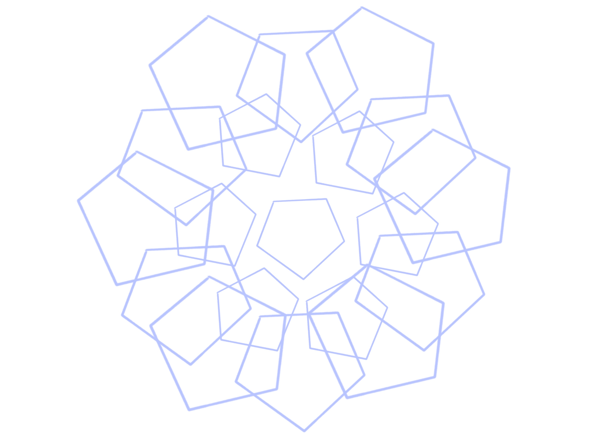

For ideation, I would like to use a 5 side polygon and make it expand both in position and radius; I will also make it change color based on radius or position.




List of Problems Encounter
Set Window width and height
Line keeps drawing and expanding without completing any polygons
Stroke color very light and does not change for some reason